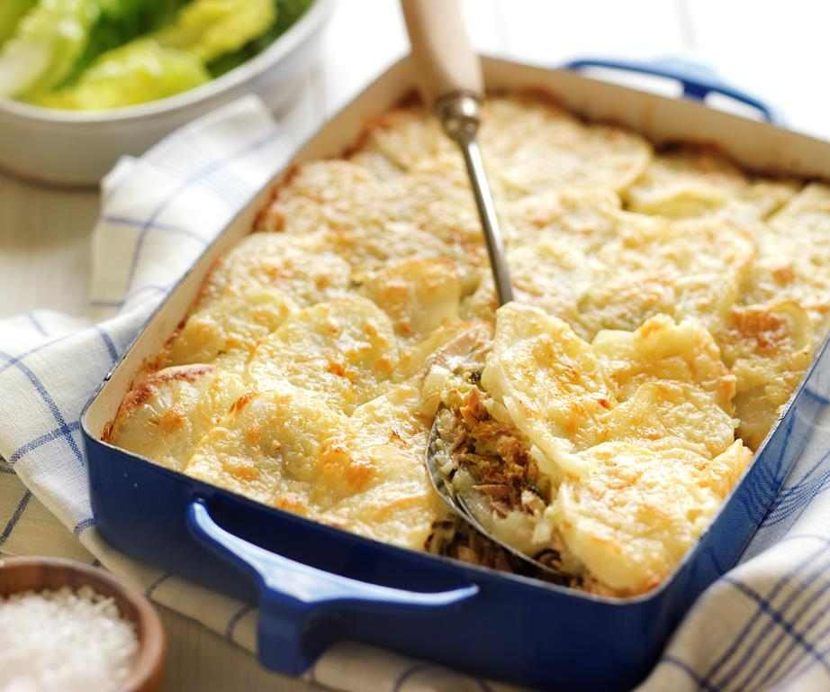

Tuna Potato Bake

Description
This is a cheesy tuna potato bake that is easy to make and heart warming to eat.
It is a great dish to make when all you have are freezer and pantry staples.
Ingredients
- 1.2 kilogram potatoes, thinly sliced
- 425 gram canned tuna in springwater,
drained, flaked
- 1 (80g) brown onion, thinly sliced
- 1 cup loosely packed fresh flat-leaf
parsley leaves
- 2 cup (200g) coarsely grated cheese
- 1 cup (250ml) pouring cream
- 2 clove garlic, crushed
- 2 teaspoon finely grated lemon rind
Steps
- Preheat oven to 200°C. Grease a shallow 2-litre
(8-cup) ovenproof dish.
- Layer about one-third of potato in dish. Top with
half the tuna, half the onion and half the parsley.
Sprinkle with 1/2 cup of the cheese. Repeat layering,
finishing with potato. Press down firmly. Cover dish
with foil; bake for 1 hour.
- Combine cream, garlic and rind in a small bowl. Season
to taste. Pour cream mixture over potato. Sprinkle with
remaining cheese.
- Bake, uncovered, for 30 minutes or until potato is tender
and top is golden brown.
Return to Homepage